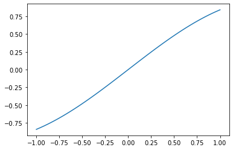

Überschrift
Überschrift¶
for i in range(10):
print(i)
0
1
2
3
4
5
6
7
8
9
Note
Dies ist eine Notiz.
import numpy as np
import matplotlib.pylab as plt
x = np.linspace(-1,1)
y = np.sin(x)
fig, ax = plt.subplots()
ax.plot(x,y);

Tip
Und hier kommt ein Tipp!
Exercise 1
Und hier die 1. Übung.
Exercise 2
Und hier die 1. Übung.
print('Hallo!')
Hallo!
import ipywidgets as widgets
widgets.IntSlider(
value=7,
min=0,
max=10,
step=1,
description='Test:',
disabled=False,
continuous_update=False,
orientation='horizontal',
readout=True,
readout_format='d'
)